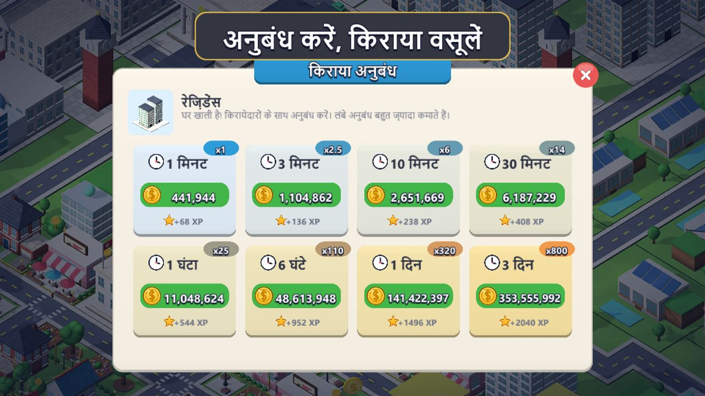
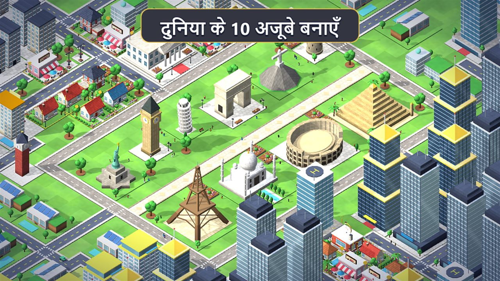
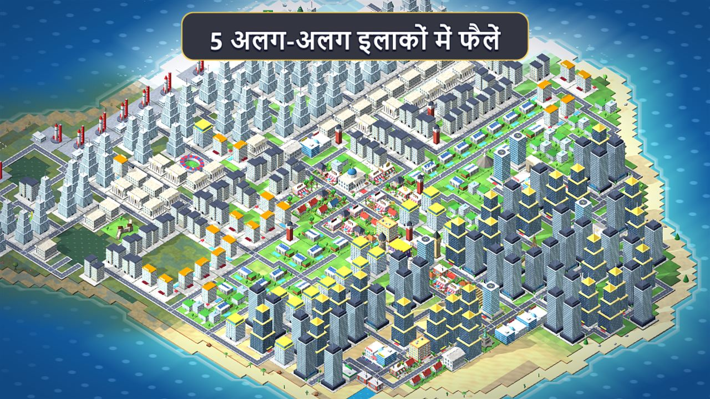

उन गेम्स में मज़ा क्यों आता था
आसान निर्माण, हर बार पैसे लेने पर मिलने वाली खुशी, और एक ऐसा शहर जो कुछ घरों से धीरे-धीरे ऊँची इमारतों तक बढ़ता था। आप दो मिनट खेलें या पूरी शाम, वापस आने की कोई न कोई वजह हमेशा रहती थी।
लगभग 2010 में Facebook पर Millionaire City, CityVille और SimCity Social जैसे सोशल शहर बनाने वाले गेम लाखों लोग खेलते थे। आप एक शहर बसाते थे, अपने घरों से सिक्के लेते थे, अपनी ज़मीन बढ़ाते थे और हर कोना सजाते थे। इनमें से कई गेम अब उपलब्ध नहीं हैं, लेकिन उनका एहसास आज भी याद है। Money City एक नया और मौलिक गेम है, जो उन खिलाड़ियों के लिए बनाया गया है जिन्हें उस तरह के गेम याद आते हैं।
Google Play पर पाएं
आसान निर्माण, हर बार पैसे लेने पर मिलने वाली खुशी, और एक ऐसा शहर जो कुछ घरों से धीरे-धीरे ऊँची इमारतों तक बढ़ता था। आप दो मिनट खेलें या पूरी शाम, वापस आने की कोई न कोई वजह हमेशा रहती थी।
Money City, Android के लिए एक आरामदायक शहर बनाने वाला और अमीर बनने वाला गेम है। आप घर बनाते हैं, 1 मिनट से 3 दिन तक के किराया अनुबंध करते हैं, एक टैप में किराया लेते हैं और एक छोटे से गाँव को मेगासिटी में बदलते हैं। आप पाँच क्षेत्रों वाले एक द्वीप पर नई ज़मीन खरीदते हैं, इमारतों को 5 सितारों तक सुधारते हैं, पार्कों और मूर्तियों से सजाते हैं और 10 विश्व अजूबे बनाते हैं, जो आपकी कमाई बढ़ाते हैं।
Money City एक सिंगल-प्लेयर गेम है और बिना इंटरनेट के चलता है। आपको Facebook अकाउंट, रिक्वेस्ट भेजने के लिए दोस्तों या इंटरनेट कनेक्शन की ज़रूरत नहीं है। विज्ञापन देखना आपकी मर्ज़ी है: आप तभी देखते हैं जब आपको बोनस चाहिए। गेम 12 भाषाओं में उपलब्ध है और आपके फ़ोन की भाषा में शुरू होता है।



नहीं। Money City एक स्वतंत्र डेवलपर द्वारा बनाया गया मौलिक गेम है। इसका इन गेम्स या इनके मालिकों से कोई संबंध या जुड़ाव नहीं है, और न ही इन्होंने इसका समर्थन किया है।
इसमें शहर बनाने और अपनी इमारतों से किराया लेने का वही आरामदायक विचार है, साथ में आज के मोबाइल फ़ीचर भी हैं, जैसे बिना इंटरनेट खेलना, किराया अनुबंध, पाँच क्षेत्र और विश्व अजूबे।
नहीं। Money City एक सिंगल-प्लेयर गेम है। आप अकेले और बिना इंटरनेट के खेल सकते हैं।
Money City, Android के लिए Google Play पर उपलब्ध है।
Millionaire City, CityVille और SimCity Social अपने-अपने मालिकों के ट्रेडमार्क हैं। इनका ज़िक्र सिर्फ़ एक तरह के गेम को समझाने के लिए किया गया है। Money City इन गेम्स या इनके मालिकों से जुड़ा नहीं है और न ही इन्होंने इसका समर्थन किया है।